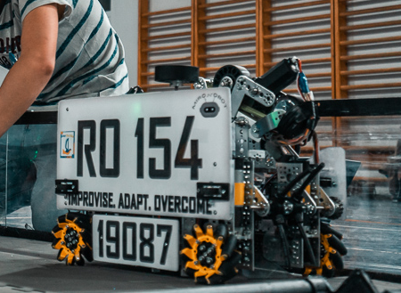
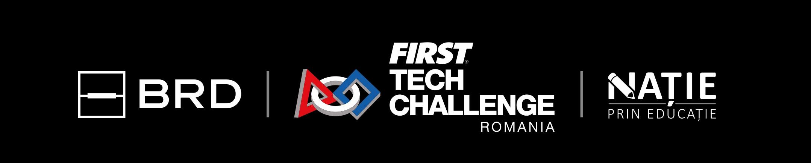

Totul a început după prezentarea făcută de un grup de elevi, ce formau deja o echipă de robotică FTC (Quasar Ro127), care ne-au stârnit curiozitatea dar și interesul către domeniul tehnic. Astfel am fondat echipa de robotică MironoBot (RO 154) a Liceului Teoretic "Miron Costin" Pașcani, cu ajutorul mentorilor, în anul 2019.
Numele echipei noastre înglobează atât calitățile noastre cât și răspunderile:
M - Muncă
I - Implicare
R - Responsabilitate
O - Originalitate
N - Noutate
O - Optimism
B - Bucurie
O - Organizare
T - Tenacitate
BRD First Tech Challenge România (FTC România) este un concurs de robotică ce face parte din concursul internațional First Tech Challenge (FTC). La fel ca și alte concursuri din categoria FIRST, FIRST Lego League Junior, FIRST Lego League sau FIRST Global Challenge și acest concurs promovează educația STEM în rândul copiilor și tinerilor. Acest concurs își propune să promoveaza conceptul FIRST (For Inspiration and Recognition of Science and Technology) în România.
În anul 2016, la începutul lunii octombrie a fost lansat concursul BRD FIRST Tech Challenge România, prima competiție națională de robotică pentru liceeni, eveniment găzduit de Universitatea Politehnică București. Această competiție promovează în România principiile educației de tip STEM (acronim pentru science, technology, engineering and mathematics), afiliate FIRST (For Inspiration and Recognition of Science and Technology) Încă de la început această inițiativă a fost dezvoltată și sprijinită de către asociația Nație Prin Educație și de către Dana Războiu.
"Suntem o forță activă în domeniul roboticii și educației STEM, împuternicind peste 2000 de elevi de liceu și 300 de mentori, din 77 de orașe din România. Aducem "învățarea făcând" și "distrându-ne" în timp ce sprijinim echipele să construiască de la zero un robot de competiție. Investim în copii care sunt pregătiți să îmbrățișeze slujbele de mâine și de-a patra revoluție industrială a ERA DIGITALĂ. Organizăm în fiecare sezon de concurs cea mai mare competiție de robotică din România pentru elevii de liceu, regionali, evenimente demo, tabere de vară și alte evenimente de informare în comunitate."